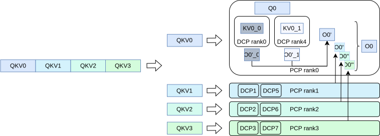
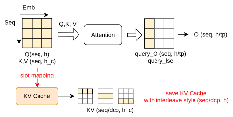
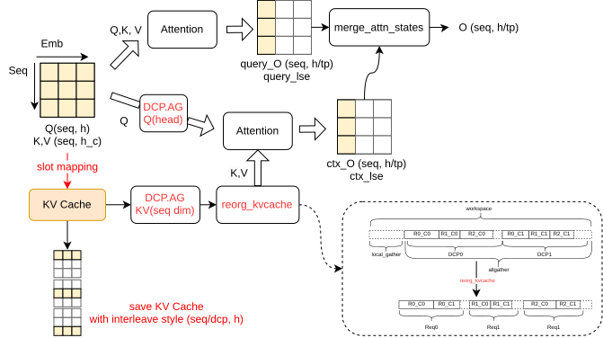
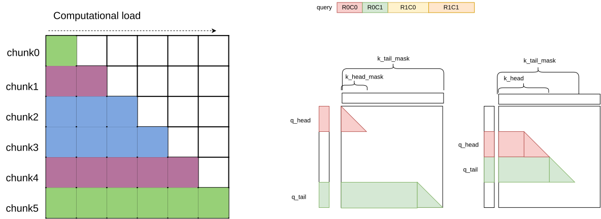
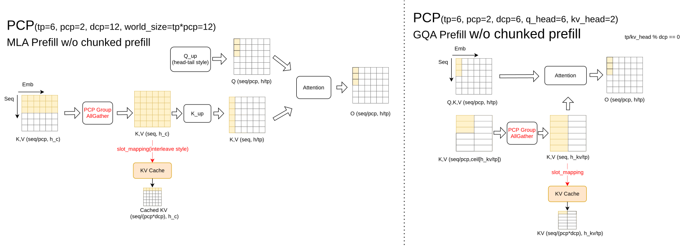
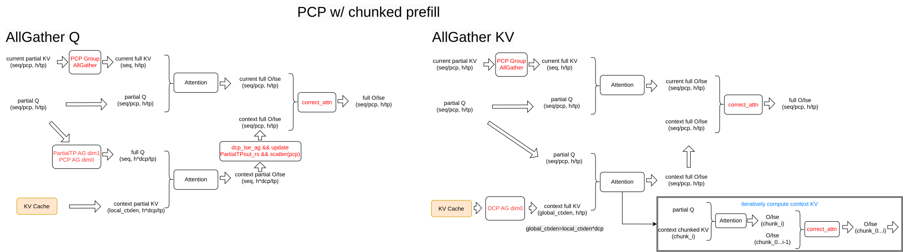

vLLM DCP & PCP 技术分享
分享人：邱纯硕
vLLM PCP 特性核心贡献者 @华为昇腾
2026.05.30
目录
- 01 CP 特性总览
- 02 vLLM DCP 特性
- 03 vLLM PCP 特性
- 04 部署场景
- 05 CP 特性优化与拓展
CP 特性总览
tl;dr — PCP 对 prefill 的输入序列进行切分，降低 TTFT；DCP 对 KVCache 进行序列切分，消除冗余存储，提升最大长度与吞吐。

vLLM DCP 特性
PR — vllm#23734 · @youzhedian (ChaoHong @月之暗面)
DCP Prefill 方案

DCP Decode 方案

DCP ChunkedPrefill 方案
MLA 路径

GQA 路径

vLLM PCP 特性
RFC — vllm#25749 · @pisceskkk (邱纯硕 @华为昇腾)
PCP 通信组
PCP 序列切分
切分逻辑在 cp_utils.py:PCPManager 中处理，涵盖 query_lens、kv_lens、positions 等序列属性，以及 q_head_idx / q_tail_idx 偏移量的计算。

PCP Prefill 方案

PCP Decode 方案

PCP Chunked Prefill 方案

部署场景
DCP 适配进度
| Chunked Prefill | APC | MTP / Eagle | Piecewise Graph | Full Graph | PD 分离 | Qwen3 (GQA) | DeepSeek (MLA) | Qwen3.5 (混合线性) | DSv3.2 | DSv4 | |
|---|---|---|---|---|---|---|---|---|---|---|---|
| vLLM DCP | 🚧 | 🚧 | 🚧 | ||||||||
| vLLM Ascend DCP |
PCP 适配进度
| Chunked Prefill | APC | MTP / Eagle | Piecewise Graph | Full Graph | PD 分离 | Qwen3 (GQA) | DeepSeek (MLA) | Qwen3.5 (混合线性) | DSv3.2 | DSv4 | |
|---|---|---|---|---|---|---|---|---|---|---|---|
| vLLM PCP | 🚧 | 🚧 | 🚧 | 🚧 | 🚧 | 🚧 | 🚧 | ||||
| vLLM Ascend PCP |
已支持 未支持 🚧 PR 适配中
DCP 部署
时延
短序列下额外通信会带来一定劣化；长序列（通常 128K 以上）因 KVCache 切分独立计算，有效降低 TPOT。
吞吐
资源紧张时通过 DCP 提升 KVCache 容量，可承载更多并发请求，吞吐显著提升。
超长序列
开启 DCP 后 KVCache 可用量大幅增长，常见模型可在单机 A3 上推理超过 1M token 的超长序列。
PCP 部署
性能
中长序列（32K～256K）场景下，时延优于 DP、略逊于 TP；吞吐优于 TP、略逊于 DP，在 DP/TP 之间取得平衡。
适用场景
当请求并发量接近系统最优吞吐时，通过 PCP 进一步降低时延，兼顾吞吐与响应速度。
CP 特性优化与拓展
TPA 特性 tensor-parallel-size-attention
RFC — vllm#34444 · @SungsooHa (NVIDIA)
标准 TP + DCP 路径
TPA 优化路径
TPA 通过将 q_proj 的切分维度从 TP 调整为 TP/DCP，减少了一次 all_gather 通信，降低 KV 计算前的同步开销。
动态 CP 特性
RFC — vllm#29295 · @Kurumi5210 (陈潇 @ICT&UCAS)
按序列长度判断"} JUDGE -->|"短序列"| CP1["CP=1 标准 DP 通路"] JUDGE -->|"长序列"| CPSEL["选择最优 CP size
(预建立通信组)"] JUDGE -->|"长尾请求"| MIG["从 CP=1 迁移到 CP>1"] CP1 --> DOMAIN["Domain
聚合多个 DP replica
为统一调度实体"] CPSEL --> DOMAIN MIG --> DOMAIN DOMAIN --> SCHED["list SchedulerOutput
跨 DP domain 的异构调度决策"] SCHED --> RUNNER["ModelRunner
CP 请求重排到 batch 最前
2D CUDA Graph"] RUNNER --> KVCACHE["CrossDPKVCacheManager
统一管理跨 DP Block Pool"] KVCACHE --> ATTN["Attention Backend
Prefill CP + Decode CP"]
实测：中短序列（4K-128K）与变长场景下，吞吐和 TTFT 均优于 DP，TPOT 无明显劣化。